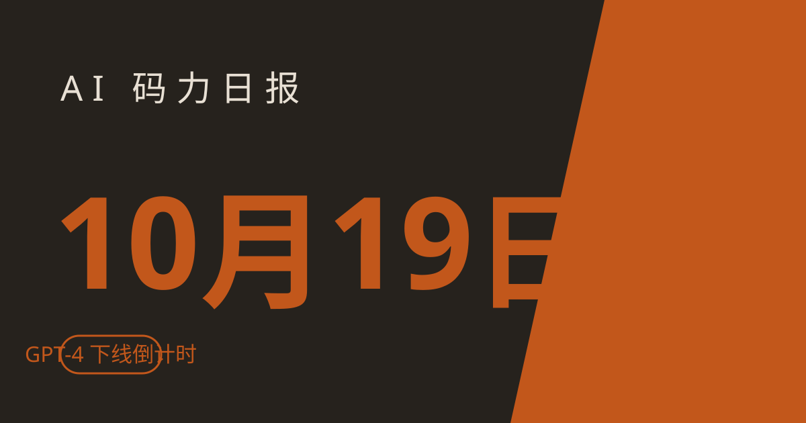

AI 码力日报 · 2026年10月19日

⚡ 一句话速览
- OpenAI 10 月 23 日关掉 GPT-4 / GPT-3.5 / o1 / o3-mini / o4-mini 等一批老模型，只剩 4 天，还没迁的现在就得动——下面给了两分钟自查方法。
- DeepSeek 10 月 17 日放出 V4.1-Flash-1017：DeepSWE 77.0 干掉 Claude Opus 5.5，权重 MIT 开源；新上的 Search / Fetch API 按次收费，10 月 31 日 16:00 UTC 起账。
- Google Gemini 4 Argon 10 月 13 日全量发布，API 优惠价（$2/$10 每百万 token）只到 11 月 30 日，之后翻倍。
- Anthropic 10 月 16 日公布一项硬核研究：Claude 用半小时复原了 NIST P-256 椭圆曲线种子——30 年悬案，结论是 lrand48 + 1997 年时间戳，不是后门；同时官方透露 Claude Code 自身代码已有 90% 是 AI 写的。
🤖 今日 AI Coding 动态
GPT-4 还有 4 天就下线，你的代码迁了吗
OpenAI 官方 deprecations 页列出的这批老模型 10 月 23 日正式关停：gpt-3.5-turbo、gpt-4、gpt-4-turbo、gpt-4o-2024-05-13、gpt-4.1-nano、o1、o1-pro、o3-mini、o4-mini、gpt-image-1，以及基于它们微调的 ft-gpt-3.5-turbo、ft-gpt-4 等。关停当天这些模型 ID 直接调不通——你的定时任务和队列 worker 最容易中招，因为报错不一定会叫醒你。官方替换映射：GPT-4 系/o1/o3-mini → gpt-5.6-sol，GPT-3.5 系/o4-mini → gpt-5.6-terra，4.1-nano → gpt-5.6-luna。微调模型无法迁移，必须在新 base 上重训，赶时间的这条最痛。OpenAI 模型关停清单
DeepSeek 扔出 V4.1-Flash-1017，编码测试干掉 Claude Opus 5.5
DeepSeek 10 月 17 日在 X 上发布 DeepSeek-V4.1-Flash-1017：相比 9 月版本，DeepSWE v1.1 从 74.2 涨到 77.0，超过 Claude Opus 5.5（74.0）；Terminal-Bench 4.0 从 31.2 涨到 42.3。API 名字和价格都不变（还是 deepseek-flash，输入 $0.30 / 输出 $1.20 每百万 token，非高峰再半价），权重在 Hugging Face / ModelScope 以 MIT 协议开源。同时上线 Search 和 Fetch API：用自家搜索引擎做联网搜索和网页抓取，每个 endpoint $0.75 / 千次，10 月 31 日 16:00 UTC 开始计费——在 DeepSeek Harness、Claude Code、Codex 里经 server-side tools 调用的暂免，31 日后统一收费。DeepSeek 官方发布帖整理
Gemini 4 Argon 全量发布，优惠价 11 月 30 日后翻倍
Google 10 月 13 日把 Gemini 4 Argon 推给所有人：开发者走 API 和 AI Studio，企业走 Gemini for Business，个人用户要 Google AI Pro / Ultra 订阅才有（免费档没份）。模型本身冲着复杂多步任务：编码、金融、法律、网络安全、科学，上下文 100 万 token。API 现在是优惠价：输入 $2 / 输出 $10 每百万 token，缓存输入再打 95 折；11 月 30 日后涨到 $4 / $20。如果你正在考虑把它接进项目，11 月底前多屯点调用测试比什么都实在。Google 发布报道
Claude 用半小时，复原了 30 年的密码学悬案
Anthropic 10 月 16 日公布的研究：内部模型发现 NIST 椭圆曲线（P-192 到 P-521）的种子来自 C 库的 lrand48 伪随机数发生器，初始化用 1997 年某天的 Unix 时间戳——P-256 的种子就是该序列的第 1,842 个候选。也就是说当年那个"会不会是 NSA 后门"的猜测基本可以放下了，是 90 年代工程师随手写的东西。声明：这不是发现新漏洞，ECDSA 曲线本身没问题，用户不用做任何事。我试读了一下论文思路，整个过程是"Claude 写 Python 程序 → 经典模拟器在几万个输入上验证 → 按 Toffoli 门数×峰值量子比特打分 → 回传给新一轮 Claude"，中间无人干预——这才是这条新闻对搞 agent 的人的真正启发：有明确评分器的任务，AI 已经能自己闭环刷分了。Anthropic 研究报道
阿里 Qwen Go 内测：agent 开始替你办事，而不是教你办事
阿里 10 月 13 日曝光了 Qwen App 里的 Qwen Go：个人 AI 助手，能翻你的授权账户、比价、然后直接联系客服替你办事。演示里它查到用户的航班延误，电话打不通就切文字客服，硬是谈下 ¥70 现金赔款；淘宝退款也谈成 ¥52。全程屏幕可见，用户可随时打断。跟之前"教你怎么维权"的助手是两回事，这是真下场干活的。不过内测范围有限，正式上线时间没公布；这类 agent 一旦铺开，商家客服被 AI 轮番轰炸是迟早的事。TechNode 报道
🐑 今日羊毛
Meta 黑客松：入选给 $150 Model API credits
一句话：Meta 全球 AI 开发者黑客松（10 月 26 日–11 月 4 日）入选者每人 $150 Meta Model API credits，10 天开发随便用；另有 $100 万奖金池。
- 怎么薅：打开 dev.meta.ai/events/global-hackathon 点 Apply now → 按 waivers 要求填表（18 岁以上、注意排除的司法管辖区）→ 10 月 25 日美东时间 23:59 前提交。入选是滚动制的，名额 2 万，先到先得。
- 有效期：报名截至 10 月 25 日（美东），过期不候
- 适合谁：想薅 Meta 新模型 API credits 练手的开发者；顺手还能体验刚开源的 Muse Spark Open
River.ai 注册送 $25，约 10 亿 token 白嫖
一句话：新 AI 开发平台 River.ai 注册送 $25 credits，用在 DeepSeek V4.1 Flash / GLM 5.3 Flash 这类便宜模型上约等于 10 亿 token。
- 怎么薅：console.river.ai 注册 → 自动到账 $25 → 建 API key，OpenAI 兼容接口，改 base_url 就能用
- 有效期：注册即得（截至撰写时），过期不候
- 适合谁：想低成本跑开源前沿模型的个人开发者；约省 ¥175
Grok 免费档还在：注册即用，API 有月度免费额度
一句话：xAI 的 Grok 消费端有真免费档（不用绑卡），开发者注册 API 有 sign-up credits，每月还有免费额度；想要更大额度可以走 data-sharing 计划。
- 怎么薅：xAI 官网注册免费档先用着；开发者走 API 注册流程领 sign-up credits
- 有效期：免费档长期有效，data-sharing 的大额度以实际条款为准
- 适合谁：想零成本体验 Grok 系列模型的人；注意 data-sharing 是拿你的使用数据换额度，敏感材料别往里放。来源
⭐ 今日 GitHub 热门项目
morluto/rea：让你的 agent 逆向没源码的 app
一句话介绍：给 AI coding agent 用的逆向工具包——对着一个没有源码的程序，它能拆开看懂某个功能是怎么实现的。解决什么问题：读不懂闭源软件/老旧二进制时，让 agent 驱动真分析工具（.NET 读程序集元数据和 CIL，native 走 Ghidra / Hopper / IDA）做证据链分析，分析全在本地跑。⭐ 本周 GitHub trending 周榜第 1（单日新增约 1.6 万 star，截至撰写时）。适合：做兼容性开发、安全研究、接手祖传二进制的人；注意只用在自己有权分析的软件上。项目地址
stablyai/orca：一个桌面 app，指挥一整队 coding agent
一句话介绍：在桌面上同时跑一支 coding agent 舰队——Claude Code、Codex、OpenCode 等 30 多种 agent 都支持。一个 prompt 发出去，5 个 agent 各自在独立的 git worktree 里干，最后你 merge 赢的那个。解决什么问题：单 agent 试错太慢，并行跑多个方案再选优。还带手机 app，路上也能看进度。适合：重度 vibe coding 用户、想对比不同 agent 效果的人。项目地址
android/skills：Android 官方亲手写的 30 个 agent 技能
一句话介绍：Android 团队官方放出的 30 个 SKILL.md，覆盖 Compose 迁移、AGP 9 升级、R8 审计等官方评估里 LLM 最拉胯的活。解决什么问题：通用 coding agent 在 Android 专项任务上经常翻车，这些是官方按自家 eval 打磨的技能文件，直接塞进 agent 就能用。适合：Android 开发者、用 Claude Code / Codex 写 Android 的人。项目地址
debpalash/VoiceStudio：本地语音工作台，一站式搞定配音转录
一句话介绍：本地跑的音频工作台——语音设计、转录、配音、长旁白工程都在一个 app 里。解决什么问题：不想把声音样本传到别人服务器上（ElevenLabs 这类都是云端），本地引擎自己选，支持的语言和质量看你自己硬件。适合：做视频配音、播客、需要本地化语音处理的人。项目地址
🛠️ 值得一试的工具：Codebuff 免费五件套
是什么：Codebuff 把自家 5 个 AI 编码产品（terminal / desktop / browser / GitHub 全覆盖）做成免费版：不用订阅、不用 API key、不用绑信用卡，直接装就能用，代价是界面里有文字广告。解决什么痛点：想体验 AI 编程但不想先掏钱、也不想折腾 key 的人。免费额度：5 个产品全免费，靠广告回本（项目 Apache-2.0，2024 年的老 repo，2026 年夏天重新定位成"免费 coding agent"后开始走红，约 13.5K star，截至撰写时）。
verdict：值得试——零门槛，5 分钟装完就能知道 AI 编程适不适合你；但免费的东西别指望顶配模型，真上生产环境再评估付费方案。来源
🎓 3 分钟小教程：OpenAI 关停潮前，两分钟自查你的代码
10 月 23 日这批老模型一关，调到它们 ID 的请求直接失败。别只 grep gpt-4，模型名可能藏在环境变量、配置文件、数据库里。
前置条件：有调用 OpenAI API 的代码仓库；手里有 API key（可选，用于第二步）
- 全仓库扫一遍（把下面这行贴进项目根目录跑）：
bash grep -rEn "gpt-3\.5-turbo|gpt-4[ .-]|gpt-4o-2024-05-13|gpt-4\.1-nano|o1(-pro)?[^a-z]|o3-mini|o4-mini|gpt-image-1" \ --include="*.py" --include="*.ts" --include="*.js" \ --include="*.go" --include="*.env*" --include="*.yaml" --include="*.json" . - 用 API key 查官方给的关停日期，确认漏网之鱼（每个模型都有
shutdown_date字段）：bash curl -s https://api.openai.com/v1/models \ -H "Authorization: Bearer $OPENAI_API_KEY" | \ python3 -c "import json,sys; [print(m['id'], m.get('shutdown_date')) for m in json.load(sys.stdin)['data'] if m.get('shutdown_date')]" - 按映射替换：GPT-4 系 / o1 / o3-mini →
gpt-5.6-sol；GPT-3.5 系 / o4-mini →gpt-5.6-terra；4.1-nano →gpt-5.6-luna；然后跑一遍你的 eval / 冒烟测试再上线——换代模型语气和长度习惯可能变，别直接全量切。
预期效果：23 日前找出所有会炸的调用点并完成替换；重点检查 cron 和队列 worker，那些地方炸了不会立刻有人发现。关停清单
数据截至撰写时，仅供参考。